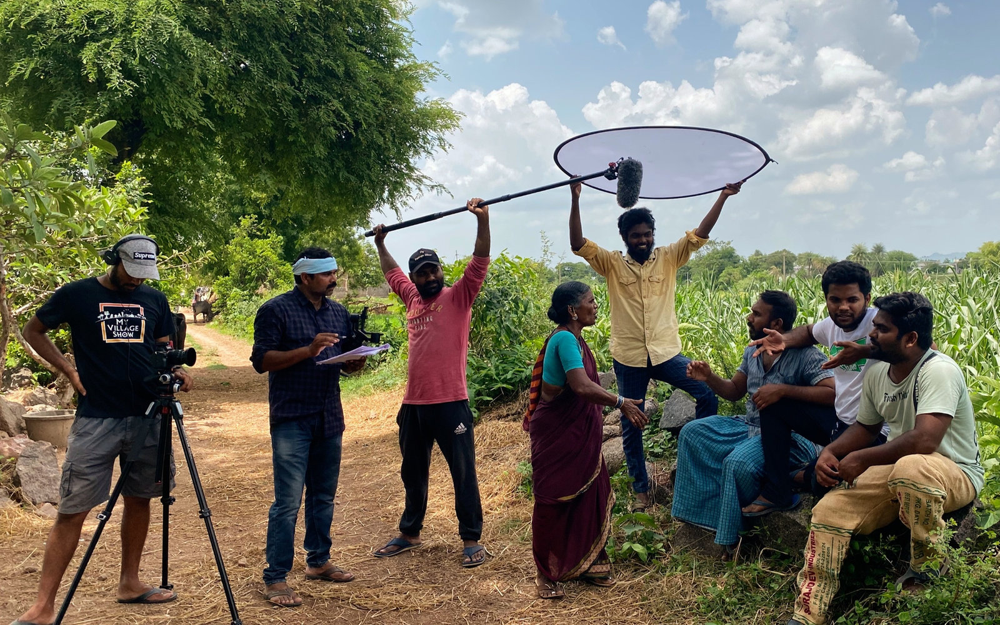
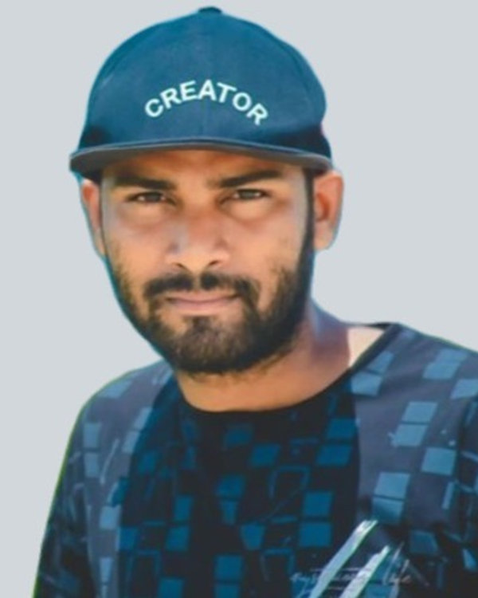

Original Telugu shows
Comedy sketches, mini-series and festival specials — written, shot and edited in our village.

Est. 2012 · Lambadipally, Telangana
మై విలేజ్ షో
The first village-based Telugu YouTube channel — a family of five channels, over a billion views, and a whole village behind the camera.
Who we are
My Village Show is the first village-based Telugu YouTube channel. Since 2012 we have been writing, shooting and editing comedy and drama in Lambadipally, Jagtial, Telangana — with our own villagers as the cast and our own fields, homes and streets as the set.
Lambadipally is a farming village in Mallial mandal of Jagtial district, near Karimnagar. Its paddy fields, festivals and family moments give us our stories, and the people who live there play the parts, write the scripts and work behind the camera.
What started as one young man's camera has grown into a family of five channels, a cast that audiences across the Telugu states call family, a podcast with guests from farming to medicine to technology, and a skills centre that helps the next generation of village creators get started.

Our story
How a village near Karimnagar became one of Telugu YouTube's best-loved homes — one sketch at a time.

On 3 November 2012, Sriram Srikanth started My Village Show to capture “my crazy thoughts in daily life” and the village around him — Lambadipally, near Karimnagar. The channel began with a little over 1,000 subscribers and one simple reason: “I love my village so much.”
Milkuri Gangavva, a farmworker from the village, began with guest appearances and became a full-time member of the cast in 2017. Her natural timing and Telangana dialect made her one of the show's most-loved stars.
In August 2018, our take on the Kiki Challenge — two farmers dancing in a muddy paddy field beside their bullocks — was picked up from India to Dubai and the United States. Gulf News wrote that they had “just won the internet”.
The channel crossed 900,000 subscribers. We were employing eight villagers in acting and scriptwriting, built an office and began training people in computer literacy. Gangavva made her film debut in Mallesham and iSmart Shankar.
CNN told Gangavva's story to an international audience. On International Women's Day she received a Women Achiever Award from the Governor of Telangana, and later that year she entered Bigg Boss Telugu Season 4. In June 2021, YouTube Originals told our journey in its Creator Spotlight series.
Five channels, more than 2,000 videos and over a billion views on the main channel. Through our Human Resource Development Center, we train young people in storytelling, filmmaking, editing and technology — so the next village story can be told by the village itself.
What we do
Comedy sketches, mini-series and festival specials — written, shot and edited in our village.
Five YouTube channels covering the show, behind-the-scenes vlogs, music, compilations and live streams.
Authentic integrations and sponsorships that reach millions of Telugu viewers in the voice they trust.
Our HRDC helps village youth learn content creation, filmmaking, editing and technology.
Our shows
Podcast
The My Village Show Podcast: long conversations from the village with the cast, farmers, doctors, founders and creators.
Celebrities & leaders
Film stars, anchors, doctors, spiritual leaders and officials who came to the village, from all our channels. New ones appear here automatically.
Our channels
Our people
Founder
“This channel is about my crazy thoughts in daily life, surrounded by me and my village. I love my village so much.”
Sriram SrikanthFounder, My Village Show
Follow on X @srikanth9025 ↗HRDC
Content creation is how we inspire the youth of our village. At HRDC in Lambadipally, we encourage everyone to build real skills — from storytelling and acting to filming, editing and technology.
Social responsibility
Before it was a comedy channel, My Village Show was a way to wake the village up. It started as Mel Kulupu, which means “awake” in Telugu, and that purpose still runs through everything we do for Lambadipally.
Srikanth and his father wrote songs on village issues like sanitation, toilets and education, and early vlogs talked through the problems Lambadipally faced.
The News Minute ↗NSS volunteers from DIET Karimnagar built toilets at the school in Lambadipally, recorded on our channel.
Watch the video ↗Lambadipally hosted National Service Scheme camps, with students living and working in the village. We filmed each day so others could see the work.
Watch a camp day ↗“We built it out of the revenue we generated for the past 2-3 years through our channel,” along with money crowd-sourced from viewers. It trains villagers in computing and filmmaking and puts on shows for farmers.
Tour the HRDC ↗We employed eight villagers in acting and scriptwriting, built an office and began training people in computer literacy, “hoping that it will help the younger ones find employment.”
NPR ↗Our podcast brings practical conversations to the village: drones for farmers, health, saving and investing, and new kinds of jobs.
Listen to the podcast →Press
From the paddy fields of Lambadipally to newsrooms in the United States, the Gulf and across India — here is what the world has said about our village.
“Their little jig put the tiny village of Lambadipally in the southern Indian state of Telangana on the map.”
NPRUnited States · Sep 2019
“Two Indian farmers just won the internet for their Kiki challenge with a twist.”
Gulf NewsDubai, UAE · 2018
“Gangavva Milkuri is not your typical YouTube star.”
CNNUnited States · Aug 2020
“A YouTube channel showcasing rural life with rustic humour and satire.”
The TribuneIndia · Aug 2020
“It truly requires a village to transform a village, one sketch at a time.”
YouTube OriginalsCreator Spotlight · Jun 2021
“They wonder why the international media came knocking on our doors when all we did was dance in the muck.”
Sriram SrikanthFounder, speaking to NPR
Also covered by The Hindu, The Times of India, Indian Express, Deccan Chronicle, Telangana Today, The Hans India, Femina, Sakshi and Namasthe Telangana.
Partner with us
Brand collaborations, sponsorships, media enquiries, HRDC programmes — or just to say namaste. We read every message.